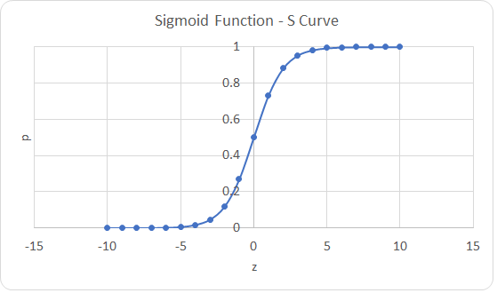
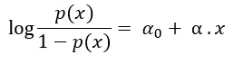
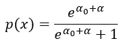
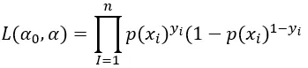
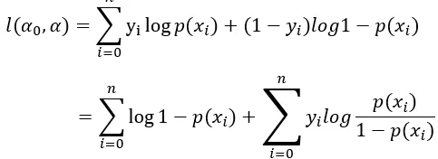
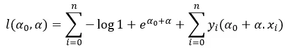
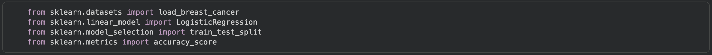
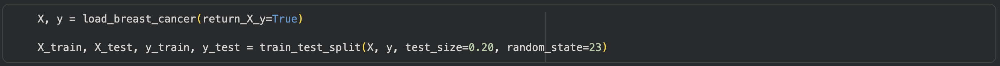
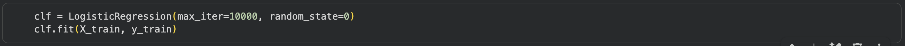
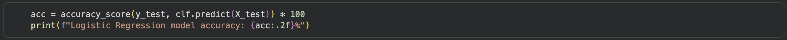

Logistic regression is a linear model that uses a sigmoidal curve to predict the probability that a data value belongs to a specific class. There are a few types of logistic regression (multinomial and ordinal), but this page only focuses on binomial logistic regression. The image below shows a sigmoidal curve. The probability of a data point belonging to a given class is on the y-axis while the z-score of the data point is represented on the x-axis.

1It is used to interpret relationships between input variables and output variables when the output variable is binomial. An example of this would be predicting if someone has or does not have a certain disease given information about presence of certain symptoms.
Logistic regression models the chance of a certain outcome given individual characteristics. The goal of a logistic regression is to output a probability from 0 to 1 from a linear equation. If p(x) is the linear function, we can bound it to have an output between 0 and 1 by considering log (p(x) / 1-p(x)). We can create the linear function:

The linear function is a linear combination of the input features. p(x) will be given by the sigmoid function:

We can then choose a threshold for the probability output. For example, if the threshold is 0.5, any output above 0.5 will be considered y=1 and any output below 0.5 will be considered y=0. y=1 and y=0 represent the two binary classes we are trying to predict.
The logistic regression model can be trained on the input data x using a likelihood function that can be written as:

Taking the log of this function results in a sum:

We can substitute in the equations from above:

2Next, we must take the maximum of the function above by implementing gradient ascent.
The parameters resulting in the maximum value for the function will be the hyperparameters for the logistic regression model.
Before implementing a logistic regression, a few conditions must be met:
Ensure that your dataset is in the form of a matrix with data points as rows and variables as columns. One column should include the binary classification for each data point that is
the output for the machine learning model.
You can follow along with this example on Colab or another coding platform!

The first step is to download the necessary functions and data from scikit-learn.
Next, we will load the breast cancer dataset into two arrays labeled X and y by running the load_breast_cancer function. The return_X_y parameter returns the dataset as two separate objects. X is an array that contains all of the features, and y is an array that contains the classification of each datapoint as malignant or benign. The values of y are actually a series of 0s and 1s, with 1 representing a malignant tumor and 0 representing a benign tumor, because the logistic regression can only interpret numerical values.
Now we create a new object, clf, which stands for classifier. We initiate a new logistic regression model using the following parameters:
4 Finally, we will evaluate the accuracy of our model using the accuracy_score function and inputting the classifications for the data points in the test set and the predictions the model makes on the training set (clf.predict(X_test)). We will print our results to two decimal places in the last line of code. If you followed the code above, you should get an accuracy of 96.49%.Logistic regression is useful for many classification problems. Here are some examples: